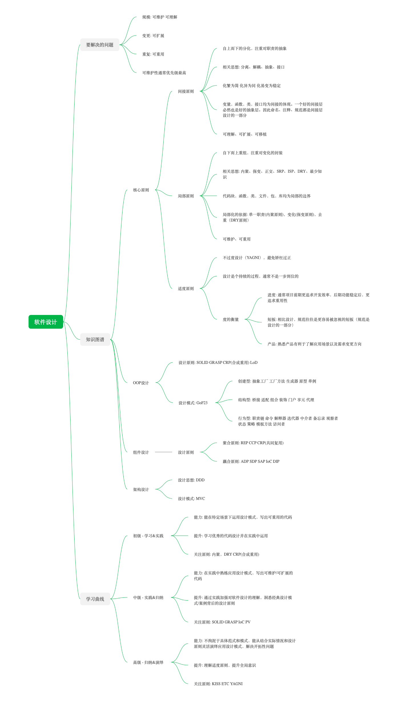

最近几个月一直忙着重构和实践基于MQ的分布式服务器框架，同时借此机会相对系统地学习了一些软件设计知识，将之前在这方面零散的知识点整合起来，按照自己的思考框架整理了一张知识脉络图。

最近几个月一直忙着重构和实践基于MQ的分布式服务器框架，同时借此机会相对系统地学习了一些软件设计知识，将之前在这方面零散的知识点整合起来，按照自己的思考框架整理了一张知识脉络图。

在目前这套项目架构诞生初期，基于当时的游戏类型和项目需求，架构做得相对简单，设计上尽可能通过goroutine而不是节点来并发，节点间用ETCD做服务发现，用gRPC做节点通信，在单向依赖，弱藕合的情况下，基本能够满足需求。对于个别强耦合的节点交互，使用gRPC Stream来建立双工连接。
随着游戏类型和业务需求的变更，跨服功能增多，节点划分越来越细，藕合越来越重，网络拓扑也越来越复杂。gRPC Stream不再能很好地胜任。
因此我们考虑用一套新的节点交互方案，大概有两个思路:
之前我在编程范式游记中介绍了OOP中的子类化(subtype，也叫子类型多态subtype polymorphism)和泛型(generics，也叫参数多态parametric polymorphism)，关于两者的区别和比较可以参考那篇文章，在其中我吐槽了Go目前对泛型支持的匮乏，随着Go 2提上日程，Go2泛型的设计细节也越来越清晰，我们从最新的Go泛型草案来了解下Go2泛型设计上有哪些考量和取舍。
先从最简单的泛型定义开始:
1 | // Define |
语法上和其它语言泛型大同小异，泛型的本质是将类型参数化，Go2中用函数名后的[]定义类型参数。以上声明对C++开发者来说非常亲切的(只是换了一种语法形式)，实际上这在Go2中是错误的泛型函数声明，因为它没有指明类型参数约束(constraints)。
在之前的博客中几次简单提及过给GS做测试，关于测试的必要性不用再多说，但在实际实践过程中，却往往会因为如下原因导致想要推进测试规范困难重重:
-. Q1: 写测试代码困难: 代码耦合重，各种相互依赖，全局依赖，导致写测试代码”牵一发而动全身”，举步维艰
-. Q2: 测试时效性低: 需求变更快，数值变更频繁，可能导致今天写好的测试代码，明天就”过时”了
-. Q3: 开发进度紧: 不想浪费过多时间来写测试代码，直接开发感觉开发效率更高
要想推进测试规范，上面的三个问题是必须解决的。这里简单聊聊我们在Golang游戏后端中的测试实践和解决方案。我们在GS中尝试的测试方案主要分为四种: 单元测试，集成测试，压力测试，以及模拟测试。
用XMind Zen 2020画了一张思维导图玩，主要是关于编程语言学习的，XMind导出的Markdown不包含链接，不知道是不是试用版的原因，由于对应链接在博客里面都找得到。就没有再做一份Markdown了。

之前被同事安利了很多次Rust，周末没事去Rust官方文档学习了下，记录一些对Rust语言粗浅理解。
要说Rust最有别于其它语言的特性，应该就是它的所有权系统了。要谈所有权系统，从GC谈起是个不错的切入点，我们众所周知的程序语言GC只要包含两种: 手动GC和自动GC，它们各有利弊，总的来说是运行时效率和开发效率之前的权衡取舍，由于现代硬件设施发展速度很快，运行时效率越来越不是问题，因此自动GC逐渐成为新语言的标配。而Rust的GC，按照我的理解，可以将其看做半自动GC，即开发者在代码中通过所有权约束来明确变量的生命周期，这样Rust在编译器就已经知道内存应该何时释放，也就不需要运行时通过复杂的GC算法去解析变量的引用关系，对运行时几乎零负担，这也是Rust敢号称系统级编程语言，运行时效率叫板C/C++的底气来源。
先来回顾一下GC的几个重要的阶段:
做标记阶段的准备工作，需要停止所有正在运行的goroutine(即STW)，标记根对象，启用内存屏障，内存屏障有点像内存读写钩子，它用于在后续并发标记的过程中，维护三色标记的完备性(三色不变性)，这个过程通常很快，大概在10-30微秒。
标记阶段会将大概25%(gcBackgroundUtilization)的P用于标记对象，逐个扫描所有G的堆栈，执行三色标记，在这个过程中，所有新分配的对象都是黑色，被扫描的G会被暂停，扫描完成后恢复，这部分工作叫后台标记(gcBgMarkWorker)。这会降低系统大概25%的吞吐量，比如MAXPROCS=6，那么GC P期望使用率为6*0.25=1.5，这150%P会通过专职(Dedicated)/兼职(Fractional)/懒散(Idle)三种工作模式的Worker共同来完成。
这段时间学习OOP对语言和编程范式有一些新的理解，之前系统整理过函数式编程，因此先从OOP谈起。我们先回顾下面向对象(OOP)的核心思想:
与函数式的”一切皆函数”一样，OOP也有一个宏大的目标”一切皆对象”。